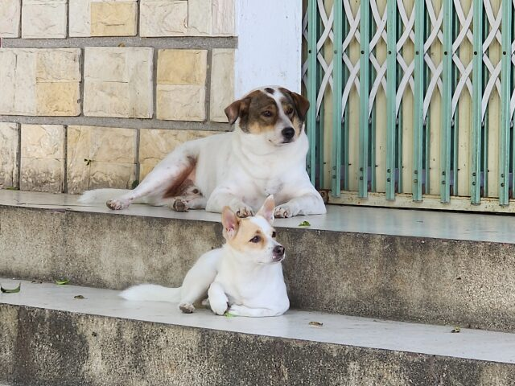
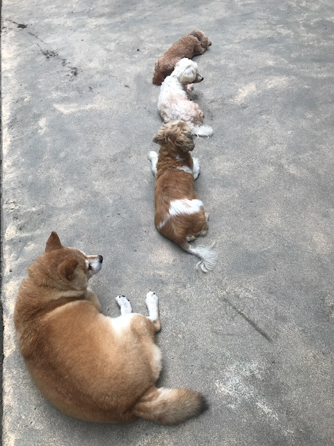
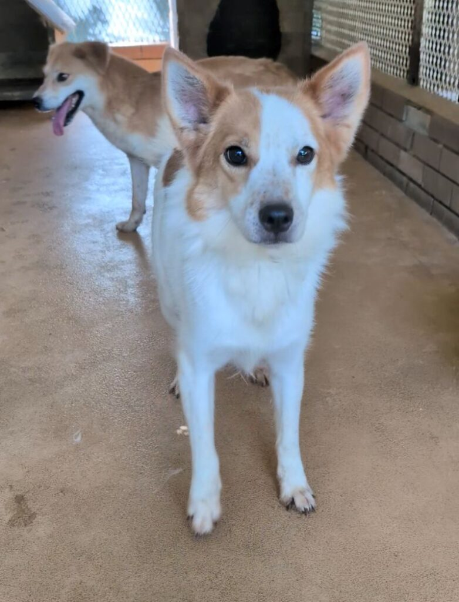

動物流浪之家的源起
讓每個生命，都有安心生活的地方當毛孩走進一個陌生的地方，牠需要的不只是食物與空間，還有時間、耐心，以及願意理解牠的人。動物流浪之家以日常照護為出發點，關心餐食、環境與相處，也重視每隻毛孩獨有的個性。我們相信，穩定的照顧能讓牠們慢慢卸下不安，重新感受生活的自在。
浪浪日常分享核心理念與使命
理解與陪伴，把善意化成每一天的照顧

我們期許每一隻來到這裡的毛孩，都能在穩定的照顧與耐心的陪伴中，慢慢找回信任，安心做自己。
從乾淨的環境、合適的餐食，到細心觀察每個小變化，照顧藏在日常的細節裡。我們尊重每隻毛孩不同的個性與步調，不催促牠們親近，讓信任隨著時間自然累積。
我們也希望讓更多人看見照顧現場，從「認識需要、找到方式、持續參與」開始，透過志工服務、物資支持與故事分享，把關心化成長久的行動。
每一份小小的善意，都能讓浪浪的日常更好一點。
與我們聯絡 ↗